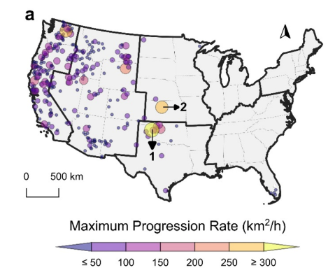

2026 · RESEARCH PUBLICATION
Tracking wildfire growth hour by hour
Using GOES satellite observations, we examined hourly progression and environmental drivers of large U.S. wildfires. The study connects patterns of rapid fire growth with weather, terrain, and vegetation, providing observational evidence for understanding fast-moving fires. Our results identify Northern California and the Central Great Plains as two key regions experiencing rapid progression during large wildfires. The fastest recorded progression rate was 320 km²/h on February 27, 2024, during the Smokehouse Creek Fire in Texas.
Publication details
† Fang, S., Yang, J., Jiao, X., Zou, C. B., Desjardins, A., Yang, H., ... & Hernandez, A. (2026). Satellite-based analysis of hourly progression and driving factors of large US wildfires. International Journal of Applied Earth Observation and Geoinformation, 149, 105288.
